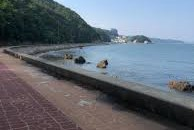

INTP 추천 여행지
경상남도 통영
추천 이유
경상남도 통영은 한려수도의 절경을 배경으로 수준 높은 클래식 공연을 감상할 수 있는 고품격 음악 공간인
통영국제음악당이 있는 도시입니다 . 지적인 대화와 문화 공연을 선호하는 INTP에게 통영의
바다와 음악은 정서적 영감과 분석적 즐거움을 동시에 제공합니다.
INTP는 고전 음악이나 재즈 콘서트처럼 지적 자극을 주는 문화 공연을 즐기는 경향이 있습니다 . 통영국제음악당은
한려수도의 절경이라는 시각적 요소와 클래식이라는 청각적 요소가 결합하여, 음악의 구조를 분석하거나 예술적
사색에 잠기기 좋아하는 INTP의 내향적 감수성을 완벽히 충족시킵니다.
추천 여행 코스
- 통영국제음악당
- 통영 해수욕장
- 삼칭이해안길
통영국제음악당
설명 내용...
통영 해수욕장
설명 내용...

삼칭이해안길
설명 내용...